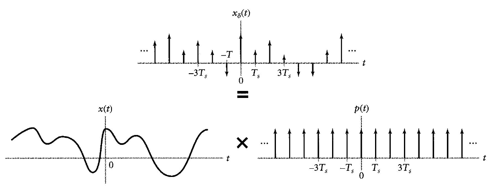
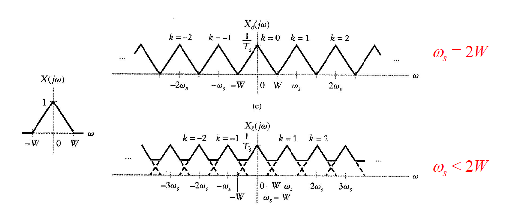
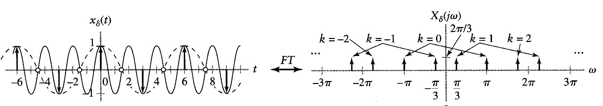

傅立葉表示法對混合信號的應用
IC Design:
- baseband IC (digital in general)
- mixed signal IC (digital + continuous-time)
- analog IC (continuous-time)
- RF IC (continuous-time)
Mixed Singal:
- discrete + continuous (sampling)
- periodic + nonperiodic (modulation)
Why Mixed Signal?
- 將週期訊號應用在 stable LTI system
- convolution 包含非週期的 impulse response 及週期的 input signal
- Sampling
- Sample continuous signals to discrete signals
建立傅立葉表示法之間的關係
週期訊號的FT表示法
Relating FT to FS
Definition of FS：x(t)=∑k=−∞∞X[k]ejkw0t
Recalled that 1FT2πδ(w)
Freq-shift property: ejkw0tFT2πδ(w−kw0) 代入 FS 的定義中
根據 linearity 的性質：
x(t)=k=−∞∑∞X[k]ejkw0tFTX(jw)=2πk=−∞∑∞X[k]δ(w−kw0)
可以得到 FT 與 FS 的關係式
觀察上圖可以發現：
- kw0：k∈Z，discrete w∈R，continuous
- 高度為 X[k] 乘上 2π
歸納 FS 與 FT 間的關係：
- Kronecker delta → Dirac delta
- Strength×2π
- Spacing: k→kw0
Example
1. cosine
Q: 求 x(t)=cos(w0t) 的 FT 表示法？
cos(w0t)FS;w0X[k]={21,k=±10,k = ±1
代入 FT 與 FS 的關係式可得：
cos(w0t)FTX(jw)=πδ(w−w0)+πδ(w+w0)
2. unit impulse train
Q. 求 p(t)=∑n=−∞∞δ(t−nT) 的 FT 表示法？
p(t) 為週期性且基頻 w0=2π/T
FS of p(t)：
P[k]=T1∫−T/2T/2δ(t)e−jkw0tdt=T1
代入 FT 與 FS 的關係式可得：
P(jw)=T2πk=−∞∑∞δ(w−kw0)
可以觀察到 p(t) 在做完 FT 後依然為 impulse train:
- Kronecker delta → Dirac delta
- Strength: T1×2π
- Spacing: kT2π
Relating DTFT to DTFS
手法與前面類似
Definition of DTFS：x[n]=∑k=0N−1X[k]ejkΩ0n
2π1ejkΩ0nDTFT∑m=−∞∞δ(Ω−kΩ0−m2π) 代入 DTFS 的定義
根據 linearity 的性質：
x[n]=k=0∑N−1X[k]ejkΩ0nDTFTX(ejΩ)=2πk=0∑N−1X[k]m=−∞∑∞δ(Ω−kΩ0−m2π)
因為 X[k] 週期為 N 且 NΩ0=2π，所以可以合併右邊的兩個 Σ：
x[n]=k=0∑N−1X[k]ejkΩ0nDTFTX(ejΩ)=2πk=−∞∑∞X[k]δ(Ω−kΩ0)
得到 DTFT 與 DTFS 的關係式
歸納 DTFS 與 DTFT 間的關係：
- Kronecker delta → Dirac delta
- Strength×2π
- Spacing: k→kΩ0
週期與非週期訊號的摺積
在真實的 LTI 系統中，impulse response 是 nonperiodic 的
Recall: convolution property is that both signals are periodic or both signals are nonperiodic
e.g. y(t)=x(t)∗h(t)FTY(jw)=X(jw)H(jw)
Solution: 用 FT 來使訊號變為週期性
x(t)FTX(jw)=2πk=−∞∑∞X[k]δ(w−kw0)
其中 X[k] 是 FS 係數，將上式帶入 convolution 的式子中：
y(t)=periodicx(t)∗nonperiodich(t)FTY(jw)=2πk=−∞∑∞X[k]δ(w−kw0)H(jw)
根據 Dirac delta function 的性質：
y(t)=x(t)∗h(t)FTY(jw)=2πk=−∞∑∞H(jkw0)X[k]δ(w−kw0)
上圖表示出了 X(jw) 與 H(jw) 相乘的情形，Y(jw) 的形式 (nonperiodic, discrete) 對應於一個週期訊號 (continuous, periodic)。因此，y(t) 是一個與 x(t) 有相同週期的週期訊號 (∵ω0 相同)。
週期與非週期訊號的乘積
Recall: y(t)=g(t)x(t)FTY(jw)=2π1G(jw)∗X(jw)
若 x(t) 是週期訊號
根據前面的推導：
x(t)FTX(jw)=2πk=−∞∑∞X[k]δ(w−kw0)
代入上式中：
y(t)=g(t)x(t)FTY(jw)=G(jw)∗k=−∞∑∞X[k]δ(w−kw0)
根據 Dirac delta function 的性質：
y(t)=g(t)x(t)FTY(jw)=k=−∞∑∞X[k]G(j(w−kw0))
AM Radio
AM: Amplitude Modulataion
調變(modulation)原本的訊號 m(t)：
r(t)=m(t)cos(wct)FTR(jw)=21(M(w−wc)+M(w+wc))
R(jw)=2π1M(jw)∗C(jw)
→2π1M(jw)∗C(jw)
→2π1M(jw)∗(πδ(w−w0)+πδ(w+w0))
→21(M(w−w0)+M(w+w0))
解調(demodulation)：
g(t)=r(t)cos(wct)FTG(jw)=21(R(w−wc)+R(w+wc))
用 M(jw) 表示 G(jw)：
G(jw)=high freqency41M(j(w−2wc))+low frequency21M(j(w))+high frequency41M(j(w+2wc))
使用 low pass filter 即可還原回原本的 m(t)
離散時間訊號的FT表示法
考慮如何將 discrete-time signal 和 continuous-time signal 做轉換，在這邊從 discrete-time signal 推回去 continuous-time signal，整體的流程：
- discrete-time signal 轉成 temp signal (過度訊號)
- temp signal 轉成 continuous-time signal
Relating FT to DTFT
complex sinusoids:
- continuous-time: x(t)=ejwt
- discrete-time: g[n]=ejΩn
DTFT
在之前就已經知道，對任意 discrete-time signal x[n] 做 DTFT：X(ejΩ)=∑n=−∞∞x[n]e−jΩn
取樣、代換
每隔 Ts 時間間隔去取樣 continuous 的訊號，假設 x[n] 等於取樣過後的 x(t):
- x(nTs)=x[n]⇒t=nTs
- ejΩn=ejwt⇒ejΩn=ejwTsn⇒Ω=wTs
將 Ω=wTs 代入公式：X(ejΩ)∣Ω=wTs=∑n=−∞∞x[n]e−jwTsn，我們稱這個頻域的訊號叫過度訊號：Xδ(jw)
FT
過渡訊號 Xδ(jw) 在時域的表示可以用逆傅立葉轉換得到，且因為有 linearity 的性質，所以可以看成：
xδ(t)=F−1{Xδ(jw)}=F−1{n=−∞∑∞x[n]e−jwTsn}=n=−∞∑∞x[n]F−1{e−jwTsn}
由之前的結論：
δ(t)FT1δ(t−t0)FTe−jwt0
上面的 Tsn 可以看成一個 time shift，於是就可以得到：
xδ(t)=n=−∞∑∞x[n]δ(t−nTs)
觀察 delta function 後可以發現，xδ(t) 就是 continuous-time 的 x[n] 表示法，在非 nTs 的地方都為 0，總結以上：
xδ(t)=n=−∞∑∞x[n]δ(t−nTs)FTXδ(jω)=n=−∞∑∞x[n]e−jwTsn
其中 xδ(t) 是 continuous-time signal (來自x[n])，xδ(t) 在 FT 後得到的結果 Xδ(jw) 是對應到 x[n] 在 DTFT 後得到的 X(ejΩ)
圖例

原先為左上方的 Kronecker delta (discrete-time)，透過 DTFT、取樣、FT 後轉成 Dirac delta (continuous-time)，即為過度訊號
Relating FT to DTFS
沒教，之後有機會補上
Sampling

Sampling (Time)
xδ(t)=n=−∞∑∞x[n]δ(t−nTs)x[n]=x(nTs)xδ(t)=n=−∞∑∞x(nTs)δ(t−nTs)t=nTsxδ(t)=n=−∞∑∞x(t)δ(t−nTs)⇒xδ(t)=x(t)n=−∞∑∞δ(t−nTs)⇒xδ(t)=x(t)p(t) where p(t)=n=−∞∑∞δ(t−nTs)
由 p(t) 的式子可以觀察到它是一個 impulse train，且由推導可以知道 p(t) 是用來關聯 x(t) 與 xδ(t) 的關係式，透過 p(t) 及的式子可以從 x(t) 得到 xδ(t)，再由前面推導的過度訊號轉換成離散訊號即可達成 sampling 的目的
圖例 (Time)

xδ(t) 為 x(t) 與 p(t) 的 time-domain 做相乘而得
Sampling (Frequency)
在時域做相乘等於在頻域做convolution
Xδ(jw)=2π1X(jw)∗P(jw)
對 impulse train P(jw) 做 FT 仍然是 impulse train (詳見前面)，sample frequency ws=2π/Ts：
Xδ(jw)=2π1X(jw)∗Ts2πk=−∞∑∞δ(w−kws)
因為 convolution delta function 所以可以簡單地知道結果：
Xδ(jw)=Ts1k=−∞∑∞X(jw−jkws)
圖例 (frequency)

對 sample 後的訊號做 FT 的結果(過度訊號，Xδ(jw))是將原訊號複製無限多份，且強度變為 1/Ts (右上圖)
對 sample 後的訊號做 DTFT 的結果，可以透過 x[n]DTFTX(ejΩ)=Xδ(jw)∣w=Ω/Ts 得到 (右下圖)
time: discrete、frequency: periodic，可以用 sampling 來理解
∵Ω=wsTs=2πfsTs=2πTs1Ts，固定每 2π 為一週期所以是 periodic
還原訊號時，取 X(ejΩ) 的 −π∼π
Sampling Aliasing
ws=2π/Ts 當 Ts 提升時會使 ws 下降，當 ws<2W 時會產生 overlap。

當取樣 overlap 時即無法再還原回原訊號，因此取樣頻率要足夠高。
取樣頻率也不可過大，原先 1MHz 即可取的用 100MHz 來取，代表多取了 100 倍的點，複雜度上升，所需記憶體也上升
Example
Sampling a Sinusoid
Q: 考慮取樣 x(t)=cos(πt)
對 x(t) 做 FT：x(t)FTX(jw)=πδ(w+π)+πδ(w−π)
對 sample 後的 x(t) 做 FT：xδ(t)FTXδ(jw)=Tsπ∑k=−∞∞δ(w+π−kws)+δ(w−π−kws)
Ts=41⇒ws=Ts2π=8π
為了避免 aliasing：ws>2π⇒Ts<1
取樣頻率太低的例子：
Ts=1⇒ws=2π
沒辦法還原，因為 sampled signal 變成 ∑n=−∞∞(−1)nδ(t−nTs) (impulse train)，而非原先的弦波。
Ts=3/2⇒ws=4/3π
要還原原本的訊號時，變成取 π/3，而非原本的 π

Aliasing in Movies
Aliasing
若有 aliasing，我們就無法對同一個取樣區分不同的 continuous-time signal
Sample Reconstruction
Sampling Theorem
取樣頻率太高需要很多記憶體，太低會產生aliasing，到底要取多少？用取樣定理
假設 x(t)FTX(jw) 表示一個 band-limited signal (X(jw)=0 for ∣w∣>wm)：
若取樣頻率 ws>2wm 則 x(t) 可以由它的取樣 x(nTs),n=0,±1,±2... 還原回來。
Definition
- Nyquist sampling rate(Nyquist rate): minimum sampling frequency 2wm
- Nyquist frequency: actual sampling frequency ws
Example
x(t)=sin(10πt)/(πt)，求 maximum sampling interval Ts？
X={1, ∣w∣≤10π0, ∣w∣>10π
wm=10π⇒ws>2wm⇒2π/Ts>20π⇒Ts<(1/10)
Ideal Reconstruction
Frequency domain
對 sampled signal 做 FT：Xδ(jw)=Ts1∑k=−∞∞X(jw−jkws)
透過 filter 從 Xδ(jw) 取出 X(jw)
Hr(jw)={Ts, ∣w∣≤ws/20, ∣w∣>ws/2
X(jw)=Xδ(jw)Hr(jw)
Time domain
頻域相乘等於時域做convolution
x(t)=xδ(t)∗hr(t)
⇒x(t)=hr(t)∗n=−∞∑∞x[n]δ(t−nTs)
⇒x(t)=n=−∞∑∞x[n]hr(t−nTs)
Hr(jw) 在時域為 sinc function (對 Hr(jw) 做 IFT)：
hr(t)=2wstsin(2wst)=πTstsin(πTst)=sinc(Tst)=sinc(2πwst)
帶入上式：
⇒x(t)=n=−∞∑∞x[n]sinc(2πws(t−nTs))
觀察上圖，可以發現 x(nTs)=x[n] (∵hr(t)在 nTs 都為0，不干擾 x[n])，其餘點都為內插求得